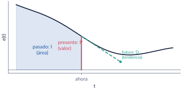
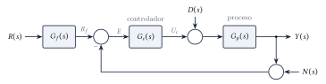
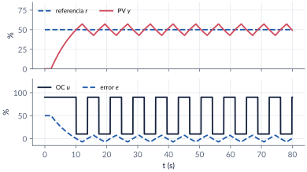
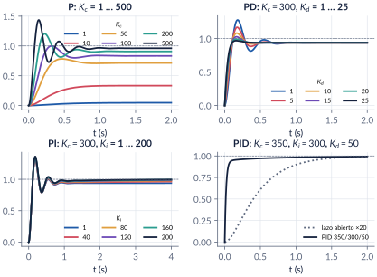
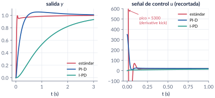
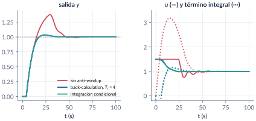
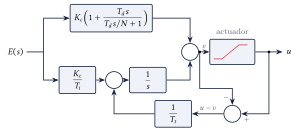
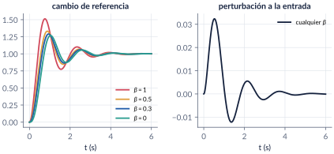

7. Controladores PID: nociones básicas
Semana 7 · una clase
El PID es, de lejos, el controlador más usado en la industria. En esta parte vemos qué hace cada una de sus tres acciones: la proporcional mira el error presente, la integral el pasado (su área) y la derivativa el futuro (su tendencia). Empezamos con el on/off, vemos por qué el proporcional deja error y cómo la integral lo elimina, y comparamos las tres formas comerciales del PID (ideal, paralelo y serie). Luego pasamos a los problemas prácticos: el ruido y el filtro derivativo, los kicks ante cambios de referencia, el wind-up con actuadores saturados y la ponderación de la referencia. Cerramos con el algoritmo digital. Cómo escoger los números es tema de la parte 8.
Al terminar esta parte usted podrá
- Explicar qué hace cada acción (P, I, D) y cómo afecta la respuesta transitoria, el error y la estabilidad.
- Pasar los parámetros de un PID entre las formas ideal, paralelo y serie, y saber cuándo la conversión es posible.
- Reconocer los problemas prácticos —kicks, ruido, wind-up— y sus remedios: filtro derivativo, estructuras I-P e I-PD, anti-windup y ponderación de la referencia.
- Escribir el algoritmo digital del PID en forma posicional e incremental.
Ruta de la clase
| Clase | Qué se ve | Handout | Scripts |
|---|---|---|---|
| 1 | Historia; on/off; acciones P, I, D; formas ideal, paralelo y serie; el ejemplo masa-resorte; filtro derivativo, kicks, wind-up, ponderación; algoritmo digital | §7.1–7.7 | C7_Ej1–C7_Ej8, crearModelo_AntiWindup |
Lo esencial, en una página
El PID ideal
\[ u_c(t)=\Kc\left(e(t)+\frac{1}{\Ti}\int_0^t e(\tau)\,\mathrm{d}\tau+\Td\deriv{e}{t}\right), \qquad \Gc(s)=\Kc\left(1+\frac{1}{\Ti s}+\Td s\right). \]
\(\Kc\) es la ganancia, \(\Ti\) el tiempo integral (el tiempo en que la integral repite la acción proporcional ante un error constante) y \(\Td\) el tiempo derivativo (un PD actúa como un proporcional que mira \(\Td\) segundos adelante).


On/off, proporcional e integral
- El on/off es simple y robusto, pero oscila: con un tiempo muerto, la PV nunca se asienta.
- El proporcional \(u_c=\Kc e+u_0\) deja error en estado estacionario en procesos sin integrador: necesita un error para sostener la salida. Con señales normalizadas, la banda proporcional es \(PB=100/\Kc\) (%).
- La integral ajusta el bias \(u_0\) sola: elimina el error ante escalones, a cambio de estabilidad.

Tres formas de escribir un PID
\[ \text{ideal: }\Kc\Bigl(1+\tfrac{1}{\Ti s}+\Td s\Bigr),\qquad \text{paralelo: }\Kc+\tfrac{K_i}{s}+K_d s,\qquad \text{serie: }\Kc^S\Bigl(1+\tfrac{1}{\Ti^S s}\Bigr)\bigl(1+\Td^S s\bigr). \]
Serie → ideal siempre: \(\Kc=\Kc^S(1+\Td^S/\Ti^S)\), \(\Ti=\Ti^S+\Td^S\), \(\Td=\Ti^S\Td^S/(\Ti^S+\Td^S)\). Ideal → serie solo si \(\Ti\ge4\Td\) (ceros reales). La forma paralelo es la única que admite \(\Kc=0\).

| Aumentar | \(\tr\) | \(\OS\) | \(\ts\) | \(\ess\) | Estabilidad |
|---|---|---|---|---|---|
| \(\Kc\) | baja | sube | sube un poco | baja | empeora |
| \(K_i=\Kc/\Ti\) | baja un poco | sube | sube | se anula | empeora |
| \(K_d=\Kc\Td\) | baja un poco | baja | baja | casi no cambia | mejora (si no hay ruido) |
Ruido y kicks
La derivada pura amplifica el ruido sin límite. Se filtra: \(\dfrac{\Td s}{(\Td/N)s+1}\) con \(N\approx8\)–\(16\), y la ganancia del controlador queda acotada en \(\Kc(1+N)\). Ante un escalón de referencia, la D (y la P) producen saltos enormes en la salida del controlador; se evitan sacándolas del camino de la referencia: estructuras PI-D e I-PD.

Wind-up y anti-windup
Con el actuador saturado, la integral sigue acumulando error y luego tarda en “desenrollarse”: sobrepicos y tiempos de establecimiento grandes. Remedios: integración condicional (congelar la integral mientras el actuador satura y el error la empuja hacia afuera) o recálculo (back-calculation), que realimenta \(u-v\) a la integral con una constante \(T_t\approx\sqrt{\Ti\Td}\).


Ponderación de la referencia
\(u_c=\Kc\Bigl[(\beta r-y)+\dfrac{1}{\Ti}\displaystyle\int e\,\mathrm{d}t+\Td\deriv{}{t}(\gamma r-y)\Bigr]\). \(\beta\) y \(\gamma\) cambian la respuesta a la referencia sin tocar la respuesta a las perturbaciones: un controlador de dos grados de libertad. PI-D es \(\beta=1\), \(\gamma=0\); I-PD es \(\beta=\gamma=0\).

PID digital
Con periodo de muestreo \(T_s\), el algoritmo posicional es \(u_c[k]=\Kc\Bigl(e[k]+\frac{T_s}{\Ti}\sum_{i=1}^k e[i]+\frac{\Td}{T_s}\bigl(e[k]-e[k-1]\bigr)\Bigr)\) y el incremental
\[ u_c[k]=u_c[k-1]+\Kc\Bigl[\Bigl(1+\tfrac{T_s}{\Ti}+\tfrac{\Td}{T_s}\Bigr)e[k]-\Bigl(1+\tfrac{2\Td}{T_s}\Bigr)e[k-1]+\tfrac{\Td}{T_s}e[k-2]\Bigr]. \]
El incremental no acumula la suma: resiste mejor el wind-up y permite pasar de manual a automático sin saltos.
Códigos de esta parte
Los bloques salen directamente de los archivos del repositorio. Ejecute antes iniciarCurso.
Un horno on/off con tiempo muerto (§7.2).
% No se encontró ../../codigo/cap07_pid_nociones/C7_Ej1_OnOff.mLa planta masa-resorte-amortiguador (§7.5).
% No se encontró ../../codigo/cap07_pid_nociones/C7_Ej2_Acciones.mProporcional.
% No se encontró ../../codigo/cap07_pid_nociones/C7_Ej2_Acciones.mProporcional-derivativo.
% No se encontró ../../codigo/cap07_pid_nociones/C7_Ej2_Acciones.mProporcional-integral.
% No se encontró ../../codigo/cap07_pid_nociones/C7_Ej2_Acciones.mPID.
% No se encontró ../../codigo/cap07_pid_nociones/C7_Ej2_Acciones.mDe serie a ideal y de vuelta (§7.4).
% No se encontró ../../codigo/cap07_pid_nociones/C7_Ej3_Estructuras.mCeros complejos: no hay forma serie.
% No se encontró ../../codigo/cap07_pid_nociones/C7_Ej3_Estructuras.mParalelo e ideal.
% No se encontró ../../codigo/cap07_pid_nociones/C7_Ej3_Estructuras.mLa función del curso convertirPID.
% No se encontró ../../codigo/comun/convertirPID.mFiltro derivativo (§7.6).
% No se encontró ../../codigo/cap07_pid_nociones/C7_Ej4_FiltroDerivativo.mEstándar, PI-D e I-PD.
% No se encontró ../../codigo/cap07_pid_nociones/C7_Ej5_Kicks.mSin corrección, con recálculo y con integración condicional.
% No se encontró ../../codigo/cap07_pid_nociones/C7_Ej6_Windup.mLa función del curso simularPID.
% No se encontró ../../codigo/comun/simularPID.mPonderación de la referencia.
% No se encontró ../../codigo/cap07_pid_nociones/C7_Ej7_Ponderacion.mAlgoritmos posicional e incremental (§7.7).
% No se encontró ../../codigo/cap07_pid_nociones/C7_Ej8_Digital.mverificarCap07 comprueba los números clave del capítulo.
% No se encontró ../../codigo/cap07_pid_nociones/verificarCap07.mModelos de Simulink
Los modelos se construyen por código
| Script | Modelo | Para qué |
|---|---|---|
crearModelo_AntiWindup.m |
dos lazos con el bloque PID Controller (forma ideal, \(\Kc=3\), \(\Ti=8\), \(\Td=2\), \(N=10\)) sobre \(e^{-4s}/(10s+1)\) con la salida limitada a \([0,\,1.5]\): uno sin anti-windup y otro con back-calculation | comparar el wind-up con y sin corrección, y barrer \(T_t\) |
Corra el script y se crea el .slx.
Pausas activas
1. Banda proporcional
Un controlador tiene \(PB=25\,\%\) con señales normalizadas. ¿Cuánto vale \(\Kc\)? ¿Y si el error se mide sobre un rango de \(200\grados\)C y la salida sobre \(100\,\%\)?
Respuesta
\(\Kc=100/25=4\) (adimensional). Con los rangos: \(\Kc=\frac{1}{0.25}\cdot\frac{100}{200}=2\) %/°C.2. ¿Tiene forma serie?
¿Tiene forma serie el PID ideal con \(\Kc=5\), \(\Ti=4\) s y \(\Td=2\) s?
Respuesta
No: \(4\Td=8>\Ti=4\). Los ceros, raíces de \(8s^2+4s+1\), son \(-0.25\pm j0.25\).3. Cota del filtro derivativo
Con \(\Kc=3\), \(\Td=2\) s y \(N=10\), ¿cuánto vale como máximo la ganancia del controlador a alta frecuencia? ¿A partir de qué frecuencia actúa el filtro?
Respuesta
\(\Kc(1+N)=33\). El filtro actúa desde \(N/\Td=5\) rad/s.Problemas
El handout trae 8 problemas (formas del PID, las tendencias de la tabla con números, banda proporcional y bias, ruido y filtro derivativo, algoritmo digital, kicks, wind-up y dos grados de libertad), con soluciones seleccionadas.
Correcciones respecto a la versión anterior
La conversión ideal → serie da \(\Td^S=\frac{\Ti^I}{2}(1-\rho)\), no \(\frac{\Td^I}{2}(1-\rho)\), y la expansión de la forma serie tenía los términos mal agrupados. La forma paralelo no es “la única que permite desactivar la integral”: es la única que admite \(\Kc=0\). En la historia, la Taylor introdujo una derivada fija hacia 1936 y en 1939 salieron el Fulscope y el Stabilog con las tres acciones ajustables; se retiraron dos datos que no se encontraron en las fuentes. Se completaron las figuras y simulaciones pendientes y se calcularon todos los números.